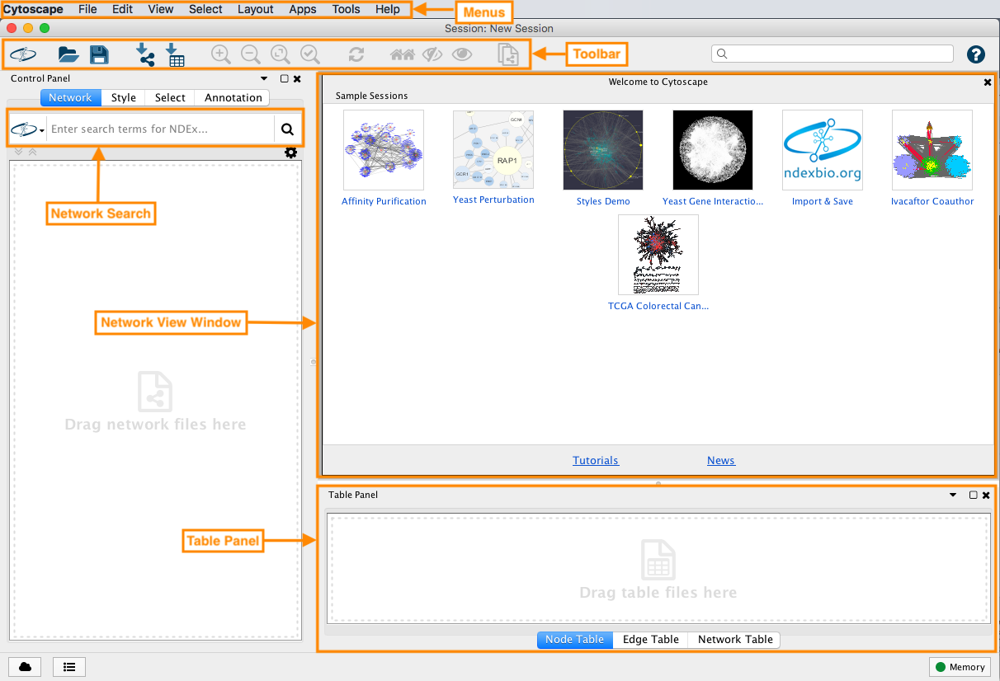

Tour of Cytoscape
This tutorial represents a high-level tour of the features of Cytoscape. Detailed instructions for specific features are provided in separate tutorials linked to from each section.
Download and install the latest Cytoscape.
This tutorial is designed to run as a demo in the CyBrowser app, with interactive buttons for each task.

Cytoscape Interface
Retrieving Networks
Cytoscape accepts network data in a variety of formats and from multiple sources, including many public interaction and network databases. This tutorial uses data from the
Selecting Hub Genes
Networks can be filtered, and nodes selected, based on associated data or network properties. The STRING database provides many node and edge attributes that we can use to explore the network. For example, we can use the "disease score" attribute to select the top 2 genes, and then select first neighbors of these, thereby using the network connectivity together with the data to direct discovery.
The figure below shows a selection of top two nodes and their first neighbors.

Creating Subnetwork
New networks can easily be created in Cytoscape from a selection of nodes and edges. Now that we have the top genes and their neighbors selected, we can create a subnetwork of this more focused subset of the network.
Once the network is created, we can apply a layout algorithm to help visualize the network. Networks in Cytoscape can be manually manipulated in terms of layout, but Cytoscape also supports a large collection of automatic layout algorithms. Layout algorithms are available under the

Loading Data
Cytoscape allows the user to add node, edge and network data as node/edge/network data columns. This could include annotation data for genes, protein-protein interaction confidence scores as well as transcriptomics data. Data is visible in the Table Panel.
We are going to load mutation data and expression data from the TCGA breast cancer dataset which includes a wide variety of data types, including genomic DNA copy number arrays, DNA methylation, exome sequencing, mRNA arrays, microRNA sequencing and reverse phase protein arrays.
Setting Styles
One of Cytoscape’s strengths in network visualization is the ability to allow users to encode any table data (name, type, degree, weight, expression data, etc.) as a property (such as color, size of node, transparency, or font type) of the network. A set of these encoded or mapped table data sets is called a Style.

Saving Results
Cytoscape provides a number of ways to save results and visualizations:
- As a session:
File → Save ,File → Save As... - As an image:
File → Export → Network to Image... - To the web:
File → Export → Network to Web Page... (Example) - To a public repository:
File → Export → Network to NDEx , orFile → Export → Collection to NDEx - As a graph format file:
File → Export → Network to File .
Formats:- CX JSON
- Cytoscape.js JSON
- GraphML
- PSI-MI
- XGMML
- SIF